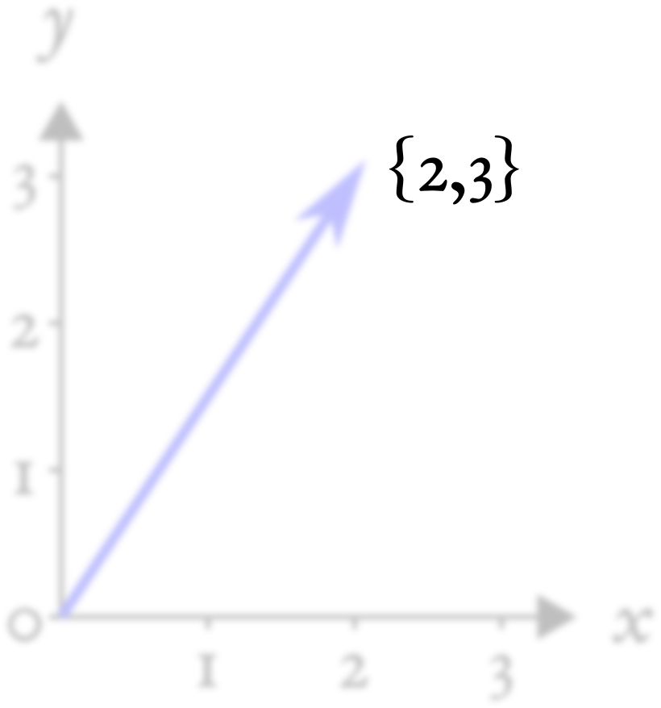
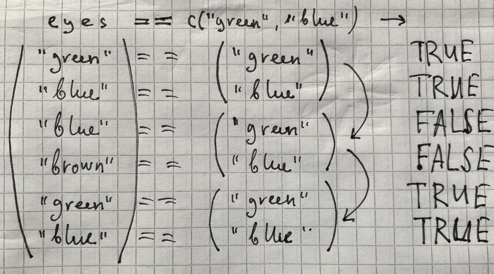
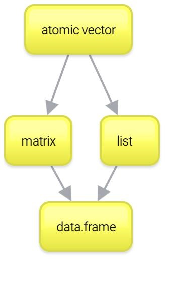

c(4, 8, 15, 16, 23, 42)[1] 4 8 15 16 23 42c("Hey", "Hey", "Ho")[1] "Hey" "Hey" "Ho" c(TRUE, FALSE)[1] TRUE FALSEИ.С. Поздняков ![]()
Если у вас не было линейной алгебры (или у вас с ней было все плохо), то просто запомните, что вектор (atomic vector или просто atomic) – это набор (столбик) чисел в определенном порядке.
Если вы привыкли из школьного курса физики считать вектора стрелочками, то не спешите возмущаться и паниковать. Представьте стрелочки как точки из нуля координат {0,0} до какой-то точки на координатной плоскости, например, {2,3}:

Вот последние два числа и будем считать вектором. Попытайтесь теперь мысленно стереть координатную плоскость и выбросить стрелочки из головы, оставив только последовательность чисел {2,3}:

На самом деле, мы уже работали с векторами в R, но, возможно, вы об этом даже не догадывались. Дело в том, что в R нет как таковых скалярных (т.е. одиночных) значений, есть вектора длиной 1. Такие дела!
Чтобы создать вектор из нескольких значений, нужно воспользоваться функцией c():
c(4, 8, 15, 16, 23, 42)[1] 4 8 15 16 23 42c("Hey", "Hey", "Ho")[1] "Hey" "Hey" "Ho" c(TRUE, FALSE)[1] TRUE FALSEДля создания числовых векторов есть удобный оператор :.
1:10 [1] 1 2 3 4 5 6 7 8 9 105:-3[1] 5 4 3 2 1 0 -1 -2 -3Этот оператор создает вектор от первого числа до второго с шагом 1. Вы не представляете, как часто эта штука нам пригодится… Если же нужно сделать вектор с другим шагом, то есть функция seq():
seq(10, 100, by = 10) [1] 10 20 30 40 50 60 70 80 90 100Кроме того, можно задавать не шаг, а длину вектора. Тогда функция seq() сама посчитает шаг:
seq(1, 13, length.out = 4)[1] 1 5 9 13Другая функция – rep() – позволяет создавать вектора с повторяющимися значениями. Первый аргумент – значение, которое нужно повторять, а второй аргумент – сколько раз повторять.
rep(1, 5)[1] 1 1 1 1 1И первый, и второй аргумент могут быть векторами! Если второй агрумент – вектор такой же длины, то каждое значение первого вектора будет повторено соответствующее количество раз из второго вектора.
rep(1:3, 3)[1] 1 2 3 1 2 3 1 2 3rep(1:3, c(10, 2, 30)) [1] 1 1 1 1 1 1 1 1 1 1 2 2 3 3 3 3 3 3 3 3 3 3 3 3 3 3 3 3 3 3 3 3 3 3 3 3 3 3
[39] 3 3 3 3Еще можно объединять вектора (что мы, по сути, и делали, просто с векторами длиной 1):
v1 <- c("Hey", "Ho")
v2 <- c("Let's", "Go!")
c(v1, v2)[1] "Hey" "Ho" "Let's" "Go!" Очень многие функции в R работают именно с векторами. Например, функции sum() (считает сумму значений вектора) и mean() (считает среднее арифметическое всех значений в векторе):
sum(1:10)[1] 55mean(1:10)[1] 5.5Что будет, если вы объедините два вектора с значениями разных типов? Ошибка?
Мы уже обсуждали, что в обычных векторах (atomic векторах) может быть только один тип данных. В некоторых языках программирования при операции с данными разных типов мы бы получили ошибку. А вот в R при несовпадении типов произойдет попытка привести типы к “общему знаменателю”, то есть конвертировать данные в более “широкий” тип (а иногда – более “узкий” тип, если того требует функция).
Например:
c(FALSE, 2)[1] 0 2FALSE превратился в 0 (а TRUE превратился бы в 1), чтобы оба значения можно было объединить в вектор. То же самое произошло бы в случае операций с векторами:
2 + TRUE[1] 3Это называется неявным приведением типов (implicit coercion).
Вот более сложный пример:
c(TRUE, 3, "hi")[1] "TRUE" "3" "hi" Здесь все значения были приведены сразу к строковому типу данных.
У R есть иерархия приведения типов:
NULL < raw < logical < integer < double < complex < character < list < expression.
Мы из этого списка еще многого не знаем, сейчас важно запомнить, что логические данные – FALSE и TRUE – превращаются в 0 и 1 соответственно, а 0 и 1 в строчки "0" и "1".
Если Вы боитесь полагаться на приведение типов, то можете воспользоваться функциями as.нужныйтипданных() для явного приведения типов (explicit coercion):
as.numeric(c(TRUE, FALSE, FALSE))[1] 1 0 0as.character(as.numeric(c(TRUE, FALSE, FALSE)))[1] "1" "0" "0"Можно превращать и обратно, например, строковые значения в числовые. Если среди числа встретится буква или другой неподходящий знак, то мы получим предупреждение NA – пропущенное значение (мы очень скоро научимся с ними работать, см. Глава 1).
as.numeric(c("1", "2", "три"))Warning: NAs introduced by coercion[1] 1 2 NAВсе те арифметические операторы, что мы использовали ранее, можно использовать с векторами одинаковой длины:
n <- 1:4
m <- 4:1
n + m[1] 5 5 5 5n - m[1] -3 -1 1 3n * m[1] 4 6 6 4n / m[1] 0.2500000 0.6666667 1.5000000 4.0000000n ^ m + m * (n - m)[1] -11 5 11 7Если применить операторы на двух векторах одинаковой длины, то мы получим результат поэлементного применения оператора к двум векторам. Это называется векторизацией (vectorization).
Если после какого-нибудь MATLAB Вы привыкли, что по умолчанию операторы работают по правилам линейной алгебры и
m * nбудет давать скалярное произведение (dot product), то снова нет. Для скалярного произведения нужно использовать операторы с%по краям:
n %*% m [,1]
[1,] 20Абсолютно так же и с операциями с матрицами в R, хотя про матрицы будет немного позже.
В принципе, большинство функций в R, которые работают с отдельными значениями, так же хорошо работают и с целыми векторами. Скажем, если вы хотите извлечь корень из нескольких чисел, то для этого не нужны никакие циклы (как это обычно делается во многих других языках программирования). Можно просто “скормить” вектор функции и получить результат применения функции к каждому элементу вектора:
sqrt(1:10) [1] 1.000000 1.414214 1.732051 2.000000 2.236068 2.449490 2.645751 2.828427
[9] 3.000000 3.162278Таких векторизованных функций в R очень много. Многие из них написаны на более низкоуровневых языках программирования (C, C++, FORTRAN), за счет чего использование таких функций приводит не только к более элегантному, лаконичному, но и к более быстрому коду.
Векторизация в R – это очень важная фишка, которая отличает этот язык программирования от многих других. Если вы уже имеете опыт программирования на другом языке, то вам во многих задачах захочется использовать циклы типа
forиwhile@ref(for). Не спешите этого делать! В очень многих случаях циклы можно заменить векторизацией. Тем не менее, векторизация – это не единственный способ избавить от циклов типаforиwhile@ref(apply).
Допустим мы хотим совершить какую-нибудь операцию с двумя векторами. Как мы убедились, с этим обычно нет никаких проблем, если они совпадают по длине. А что если вектора не совпадают по длине? Ничего страшного! Здесь будет работать правило ресайклинга (правило переписывания, recycling rule). Это означает, что если мы делаем операцию на двух векторах разной длины, то если короткий вектор кратен по длине длинному, короткий вектор будет повторяться необходимое количество раз:
n <- 1:4
m <- 1:2
n * m[1] 1 4 3 8А что будет, если совершать операции с вектором и отдельным значением? Можно считать это частным случаем ресайклинга: короткий вектор длиной 1 будет повторятся столько раз, сколько нужно, чтобы он совпадал по длине с длинным:
n * 2[1] 2 4 6 8Если же меньший вектор не кратен большему (например, один из них длиной 3, а другой длиной 4), то R посчитает результат, но выдаст предупреждение.
n + c(3,4,5)Warning in n + c(3, 4, 5): longer object length is not a multiple of shorter
object length[1] 4 6 8 7Проблема в том, что эти предупреждения могут в неожиданный момент стать причиной ошибок. Поэтому не стоит полагаться на ресайклинг некратных по длине векторов. А вот ресайклинг кратных по длине векторов – это очень удобная штука, которая используется очень часто.
Итак, мы подошли к одному из самых сложных моментов. И одному из основных. От того, как хорошо вы научись с этим работать, зависит весь ваш дальнейший успех на R-поприще!
Речь пойдет об индексировании векторов. Задача, которую Вам придется решать каждые пять минут работы в R – как выбрать из вектора (или же списка, матрицы и датафрейма) какую-то его часть. Для этого используются квадратные скобочки [] (не круглые – они для функций!).
Самое простое – индексировать по номеру индекса, т.е. порядку значения в векторе.
n <- c(0, 1, 1, 2, 3, 5, 8, 13, 21, 34)
n[1][1] 0n[10][1] 34Если вы знакомы с другими языками программирования (не MATLAB, там все так же) и уже научились думать, что индексация с 0 – это очень удобно и очень правильно (ну или просто свыклись с этим), то в R вам придется переучиться обратно. Здесь первый индекс – это 1, а последний равен длине вектора – ее можно узнать с помощью функции
length(). С обоих сторон индексы берутся включительно.
С помощью индексирования можно не только вытаскивать имеющиеся значения в векторе, но и присваивать им новые:
n[3] <- 20
n [1] 0 1 20 2 3 5 8 13 21 34Конечно, можно использовать целые векторы для индексирования:
n[4:7][1] 2 3 5 8n[10:1] [1] 34 21 13 8 5 3 2 20 1 0n[4:6] <- 0
n [1] 0 1 20 0 0 0 8 13 21 34Индексирование с минусом выдаст вам все значения вектора кроме выбранных:
n[-1][1] 1 20 0 0 0 8 13 21 34n[c(-4, -5)][1] 0 1 20 0 8 13 21 34Минус здесь “выключает” выбранные значения из вектора, а не означает отсчет с конца как в Python.
Более того, можно использовать логический вектор для индексирования. В этом случае нужен логический вектор такой же длины:
n[c(TRUE, FALSE, TRUE, FALSE, TRUE, FALSE, TRUE, FALSE, TRUE, FALSE)][1] 0 20 0 8 21Логический вектор работает здесь как фильтр: пропускает только те значения, где на соответствующей позиции в логическом векторе для индексирования содержится TRUE, и не пропускает те значения, где на соответствующей позиции в логическом векторе для индексирования содержится FALSE.

Ну а если эти два вектора (исходный вектор и логический вектор индексов) не равны по длине, то тут будет снова работать правило ресайклинга!
n[c(TRUE, FALSE)] #то же самое - recycling rule![1] 0 20 0 8 21Есть еще один способ индексирования векторов, но он несколько более редкий: индексирование по имени. Дело в том, что для значений векторов можно (но не обязательно) присваивать имена:
my_named_vector <- c(first = 1,
second = 2,
third = 3)
my_named_vector['first']first
1 А еще можно “вытаскивать” имена из вектора с помощью функции names() и присваивать таким образом новые имена.
d <- 1:4
names(d) <- letters[1:4]
names(d)[1] "a" "b" "c" "d"d["a"]a
1
letters– это “зашитая” в R константа – вектор букв от a до z. Иногда это очень удобно! Кроме того, есть константаLETTERS– то же самое, но заглавными буквами. А еще в R есть названия месяцев на английском и числовая константаpi.
Вернемся к нашему вектору n и посчитаем его среднее с помощью функции mean():
mean(n)[1] 9.7А как вытащить все значения, которые больше среднего?
Сначала получим логический вектор – какие значения больше среднего:
larger <- n > mean(n)
larger [1] FALSE FALSE TRUE FALSE FALSE FALSE FALSE TRUE TRUE TRUEА теперь используем его для индексирования вектора n:
n[larger][1] 20 13 21 34Можно все это сделать в одну строчку:
n[n > mean(n)][1] 20 13 21 34Предыдущая строчка отражает то, что мы будем постоянно делать в R: вычленять (subset) из данных отдельные куски на основании разных условий.
На работе с логическими векторами построено очень много удобных фишек, связанных со сравнением условий.
eyes <- c("green", "blue", "blue", "brown", "green", "blue")mean() и sum() для подсчета пропорций и количества TRUEУже знакомая нам функция sum() позволяет посчитать количество TRUE в логическом векторе. Например, можно удобно посчитать сколько раз значение "blue" встречается в векторе eyes:
eyes == "blue"[1] FALSE TRUE TRUE FALSE FALSE TRUEsum(eyes == "blue")[1] 3Функцию mean() можно использовать для подсчета пропорций TRUE в логическом векторе.
eyes == "blue"[1] FALSE TRUE TRUE FALSE FALSE TRUEmean(eyes == "blue")[1] 0.5Умножив на 100, мы получим долю выраженную в процентах:
mean(eyes == "blue") * 100[1] 50all() и any()Функция all() выдает TRUE только когда все значения логического вектора на входе равны TRUE:
all(eyes == "blue")[1] FALSEФункция any() выдает TRUE когда есть хотя бы одно значение TRUE:
any(eyes == "blue")[1] TRUEВместе с оператором ! можно получить много дополнительных вариантов. Например, есть ли хотя бы один FALSE в векторе?
any(!eyes == "blue")[1] TRUE!all(eyes == "blue")[1] TRUEВсе ли значения в векторе равны FALSE?
all(!eyes == "blue")[1] FALSE!any(eyes == "blue")[1] FALSEwhich()Как вы уже знаете, и логические векторы, и числовые вектора с индексами могут использоваться для индексирования векторов. Иногда может понадобиться превратить логический вектор в вектор индексов. Для этого есть функция which()
which(eyes == "blue")[1] 2 3 6Часто возникает такая задача: нужно проверить вектор на равенство с хотя бы одним значением из другого вектора. Например, мы хотим вычленить всех зеленоглазых и голубоглазых. Может возникнуть идея сделать так:
eyes[eyes == c("green", "blue")][1] "green" "blue" "green" "blue" Перед нами самый страшный случай: результат похож на правильный, но не правильный! Попытайтесь самостоятельно понять почему этот ответ неверный и что произошло на самом деле.
А на самом деле мы просто сравнили два вектора, один из которых короче другого, следовательно, у нас сработало правило ресайклинга.

Как мы видим, это совсем не то, что нам нужно! В данной ситуации нам подойдет сравнение с двумя значениями вместе с логическим ИЛИ.
eyes[eyes == "green" | eyes == "blue"][1] "green" "blue" "blue" "green" "blue" Однако это не очень удобно, особенно если значений больше 2. Тогда на помощь приходит оператор %in%, который выполняет именно то, что нам изначально нужно: выдает для каждого значения в векторе слева, есть ли это значение среди значений вектора справа.
eyes[eyes %in% c("green", "blue")][1] "green" "blue" "blue" "green" "blue" В реальных данных у нас часто чего-то не хватает. Например, из-за технической ошибки или невнимательности не получилось записать какое-то измерение. Для обозначения пропущенных значений в R есть специальное значение NA (расшифровывается как Not Available - недоступное значение). NA – это не строка "NA", не 0, не пустая строка "" и не FALSE. NA – это NA. Большинство операций с векторами, содержащими NA будут выдавать NA:
missed <- NA
missed == "NA"[1] NAmissed == ""[1] NAmissed == NA[1] NAЗаметьте, даже сравнение NA c NA выдает NA. Это может прозвучать абсурдно: ну как же так, и то NA, и другое NA – это же одно и то же, они должны быть равны! Не совсем: NA – это отсутствие информации об объекте, неопределенность, неизвестная нам величина. Если мы не знаем двух значений (т.е. имеем два NA), то это еще не значит, что они равны.
Иногда наличие NA в данных очень бесит:
n[5] <- NA
n [1] 0 1 20 0 NA 0 8 13 21 34mean(n)[1] NAПолучается, что наличие NA “заражает” неопределенностью все последующие действия. Что же делать?
Наверное, надо сравнить вектор с NA и исключить этих пакостников. Давайте попробуем:
n == NA [1] NA NA NA NA NA NA NA NA NA NAАх да, мы ведь только что узнали, что даже сравнение NA c NA приводит к NA! Сначала это может показаться нелогичным: ведь с обоих сторон NA, почему же тогда результат их сравнения – это тоже NA, а не TRUE?
Дело в том, что сравнивая две неопределенности, вы не можете установить между ними знак равенства. Представим себе двух супергероев: Бэтмена и Спайдермена. Допустим, мы не знаем их рост:
Batman <- NA
Spiderman <- NAОдинаковый ли у них рост?
Batman == Spiderman[1] NAМы не знаем! Возможно, да, возможно, и нет. Поэтому у нас здесь остается неопределенность.
Так как же избавиться от NA в данных? Самый простой способ – это функция is.na():
is.na(n) [1] FALSE FALSE FALSE FALSE TRUE FALSE FALSE FALSE FALSE FALSEРезультат выполнения is.na(n) выдает FALSE на тех позициях, где у нас числа (или другие значения), и TRUE там, где у нас NA. Чтобы вычленить из вектора n все значения кроме NA нам нужно, чтобы было наоборот: TRUE, если это не NA, FALSE, если это NA. Здесь нам понадобится логический оператор НЕ ! (мы его уже встречали – см. Глава 2.8.3), который инвертирует логические значения:
n[!is.na(n)][1] 0 1 20 0 0 8 13 21 34Ура, мы можем считать среднее без NA!
mean(n[!is.na(n)])[1] 10.77778Теперь Вы понимаете, зачем нужно отрицание (!)
Итак, с векторами мы более-менее разобрались. Помните, что вектора – это один из краеугольных камней вашей работы в R. Если вы хорошо с ними разобрались, то дальше все будет довольно несложно. Тем не менее, вектора – это не все. Есть еще два важных типа данных: списки (list) и матрицы (matrix). Их можно рассматривать как своеобразное “расширение” векторов, каждый в свою сторону. Ну а списки и матрицы нужны чтобы понять основной тип данных в R – датафрейм (dataframe).
